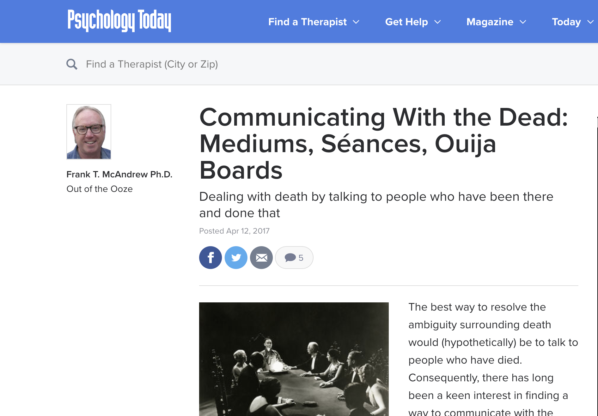
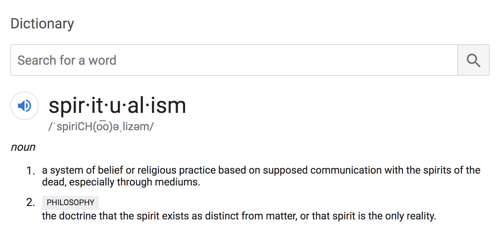
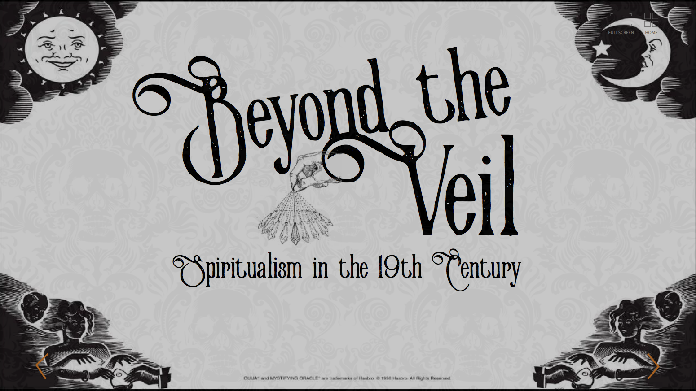
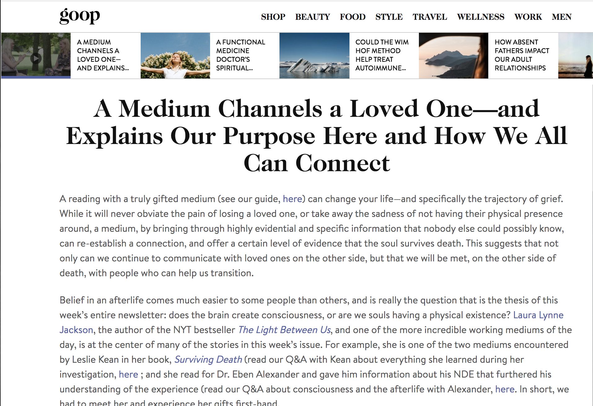
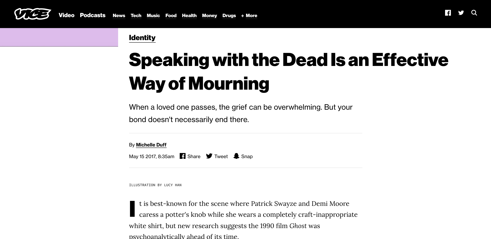

Humans have always been fascinated by death—it's one of the few things we have no way of knowing about. So welcome to The Other Side, a site all about ghosts and spirits and communicating with them.
San Luis Obispo County resident Carol Hutchison visits her husband's grave and talks about her life now without him and her parents, and what she does to honor their memory.
People are fascinated with death and the concept of an afterlife. We’ve woven it into our religions and set ideologies to help us understand the steadily approaching end of life. We imagine that people live on in another dimension, watching over Earth, in hopes of quenching our curiosity and easing our worries.
Consequently, there is also a great intrigue in communication with the dead.

Talking to the dead has been a topic of interest in human culture since the ancient times of the Old Testament, where God forbade people from seeking psychics and King Saul paid the price for attempting to bring back the spirit of his dead mentor.
In the 1800s, relying on a middleman to act as the link between the worlds of the living and dead became common with the resurgence of Spiritualism.

Spiritualism took hold of America quickly, acting as the perfect intersection between faith and science. It started with two sisters from New York, Maggie and Kate Fox, who began to communicate with a ghost in their apartment through a system of knocks. They skyrocketed in popularity and began communicating in front of audiences, starting a new wave of spiritual mediums.

These mediums (or psychics, spirit guides, etc) used a variety of techniques to contact the dead. These are the same forms of communication many people think of today when seeking to speak to the dead. Some mediums say they simply connect with the dead through the energy of their living loved ones.
Others use popular modern forms of communication include seances, spirit channeling, trance and ouija boards. This last technique has become a part of popular culture today, used even without the help of mediums.
Though spiritual conduits and these various rituals were used largely for religious purposes in the past, many people use mediums now to get closure and help with grief management from the passing of loved ones.

According to Dr. Natasha Tassell-Matamua, a senior lecturer at Massey University’s School of Psychology, after-death communication can act like therapy. People who believed they had had contact with the dead felt reported feelings of increased comfort and closure.

We hear about, or even experience ourselves, little moments that seem to be messages from the other side. A butterfly lands next to a girl as she thinks about and misses her mother. The smell of cologne suddenly fills the air in a room that used to be shared with a husband. The radio starts playing the favorite song of an old friend just as they’re being remembered.
Many people acknowledge these signs and take them as positives, a little help to get through the feeling of losing someone to the unknown. But not everyone is on board with the idea of supernatural communication, especially through a conduit.
Over the years, the idea of spiritual communications has faced a lot of controversy. There have been several instances of psychics and mediums being exposed as frauds, giving false readings in order to make money.
This fake psychic led families to believe that she knew where their missing children were, and was exposed on national television 😭 her reaction has me CRYING pic.twitter.com/TfKc0sImTq
A notable and popular example is psychic Sylvia Browne, who told a mother on The Montel Williams talk show in 2004 that her daughter was dead and wouldn’t ever be returning to her. Over a decade later, the missing girl, Amanda Berry, was found alive.
Despite the mistrust in human beings claiming a connection to the spiritual world, people are still captivated by the idea of communicating with the dead. In the past few years, there have been technologies developed to create digital versions of the dead so we can continue to talk online.
Researchers at the MIT Media Lab and Ryerson University are currently attempting to make “augmented eternity” a reality through machine learning and artificial intelligence. By compiling all the texts, emails, tweets, snapchats, etc. of the deceased, neuroscientists and philosophers are trying to create realistic chatbots that could communicate with the living.